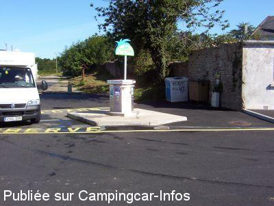

ASN = Aire de services avec stationnement nuit possible de :
CONCARNEAU
(N° 468)
Accès/adresse :
Avenue de la Gare
29900 CONCARNEAU
29900 CONCARNEAU
Latitude : (Nord) 47.87897° Décimaux ou 47° 52′ 44′′
Longitude : (Ouest) -3.92046° Décimaux ou -3° 55′ 13′′
Tarif : 2015
Stationnement 01/04 au 30/09 : 4 €
Payement à l'horodateur
Services : 4 €
Paiement par carte bancaire
Type de borne : AIRESERVICES
Services :


Proche du centre-ville et nombreux restaurants
Autres informations :
Ouvert toute l'année, excepté pendant la fête des Filets Bleus
40 emplacements
Tel : +33(0)298 503 873
Le 20/12/2009 par GILLES 33

Le 12/09/2007 par giloulin
Le 06/06/2006 par EXPLORATEUR-44
de
hindi
le 03/03/2016 :
Nous y avons passé une nuit du 27 au 28 février 2016 Proche de la ville close, mais très bruyant la nuit en tout cas en week end. sortie de bar, cris, accélération exagérée des voitures etc...
Nous y avons passé une nuit du 27 au 28 février 2016 Proche de la ville close, mais très bruyant la nuit en tout cas en week end. sortie de bar, cris, accélération exagérée des voitures etc...
de
Baroudeur 44
le 12/11/2015 :
Bonjour,
De passage le 31 Octobre, parking interdit aux campings cars pour plus d'un mois, parking utilisé pour le stationnement des forains, pour la foire de la Saint Martin.
Bonjour,
De passage le 31 Octobre, parking interdit aux campings cars pour plus d'un mois, parking utilisé pour le stationnement des forains, pour la foire de la Saint Martin.
de
pascal
le 03/09/2015 :
nous avons passé deux nuits le 25 et 26 aout pour 4€
la nuits de 20h à 8h00 au calme et pas trop loin de la ville endroit à recommander.
nous avons passé deux nuits le 25 et 26 aout pour 4€
la nuits de 20h à 8h00 au calme et pas trop loin de la ville endroit à recommander.
de
marco
le 16/07/2015 :
De passage en juin 2015,bien et merci à la ville,mais attention aux personnes à mobilité réduite ,la ville close est à 1km500 .
De passage en juin 2015,bien et merci à la ville,mais attention aux personnes à mobilité réduite ,la ville close est à 1km500 .
de
migalec
le 16/10/2014 :
§ 24/09/2014, 4€ donnés avec le sourire pour passer une nuit (au calme) et une journée (pour visiter la vieille ville).
§ 24/09/2014, 4€ donnés avec le sourire pour passer une nuit (au calme) et une journée (pour visiter la vieille ville).
de
PG
le 16/07/2014 :
De passage en juin 2014, aire à deux pas du centre très pratique pour visiter la vieille ville
De passage en juin 2014, aire à deux pas du centre très pratique pour visiter la vieille ville
de
TITITE 35
le 14/02/2013 :
§
De passage le 8 /02 le stationnement était gratuit (c'est parait-il le cas hors saison )et heureusement car 2 Euros de stationnement plus 4 pour le service c'est un peu exagéré sachant que sur le même parking le stationnement des autres véhicule n'est pas payant
§
De passage le 8 /02 le stationnement était gratuit (c'est parait-il le cas hors saison )et heureusement car 2 Euros de stationnement plus 4 pour le service c'est un peu exagéré sachant que sur le même parking le stationnement des autres véhicule n'est pas payant
de
vaillant
le 31/10/2011 :
l'aire de la gare étant prise par des forains(1mois), nous sommes allés à celle du Porzou. Très calme,bord de mer et proche de la ville close par le bac situé à plus de 5mn par le sentier côtier.
l'aire de la gare étant prise par des forains(1mois), nous sommes allés à celle du Porzou. Très calme,bord de mer et proche de la ville close par le bac situé à plus de 5mn par le sentier côtier.
de
JP-35
le 26/08/2010 :
Nous avons passé la nuit sur cette aire, proche du centre-ville (environ 10mn et 5 de plus pour la ville close). Nuit calme. Une quarantaine de CC y séjournait. 2€ la nuit par horodateur et 4€ pour les services. WC au bout du parking CC face à l'ancienne gare (propres).
Beaucoup de monde malgré un temps exécrable. Mais la ville close est toujours très fréquentée. La dernière fois, nous avions séjourné au camping Le Moulin d'Arore (nous étions en caravane). Ce dernier est assez proche de la ville close, par un petit sentier côtier ensuite il faut prendre le bac pour la traversée.
Nous remercions la ville de Concarneau de si bien accueillir les camping-caristes. §
Nous avons passé la nuit sur cette aire, proche du centre-ville (environ 10mn et 5 de plus pour la ville close). Nuit calme. Une quarantaine de CC y séjournait. 2€ la nuit par horodateur et 4€ pour les services. WC au bout du parking CC face à l'ancienne gare (propres).
Beaucoup de monde malgré un temps exécrable. Mais la ville close est toujours très fréquentée. La dernière fois, nous avions séjourné au camping Le Moulin d'Arore (nous étions en caravane). Ce dernier est assez proche de la ville close, par un petit sentier côtier ensuite il faut prendre le bac pour la traversée.
Nous remercions la ville de Concarneau de si bien accueillir les camping-caristes. §
de
francky33
le 28/02/2010 :
Passage ce mois. Nous avons trouvé cette aire, ce parking sinistre et avons fini au camping le Moulin d'Aurore (comme conseillé sur le panneau de l'aire !).Accueil sympa, un chemin cotier permet de rejoindre le centre
Passage ce mois. Nous avons trouvé cette aire, ce parking sinistre et avons fini au camping le Moulin d'Aurore (comme conseillé sur le panneau de l'aire !).Accueil sympa, un chemin cotier permet de rejoindre le centre
de
Aurélie Le Marchand
le 02/06/2009 :
Aire de la gare à Concarneau en mai, 60 camping-cars, les uns sur les autres, emplacements pas délimités, parking payant, du bruit toute la nuit. Heureusement que les campings de Concarneau sont accueillants et font des tarifs spéciaux camping-cars : 20€ les 2 nuits. Si vous passez par Concarneau, je vous conseille le camping du Cabellou Plage, des bus juste à côté et l'accueil est excellent.
Aire de la gare à Concarneau en mai, 60 camping-cars, les uns sur les autres, emplacements pas délimités, parking payant, du bruit toute la nuit. Heureusement que les campings de Concarneau sont accueillants et font des tarifs spéciaux camping-cars : 20€ les 2 nuits. Si vous passez par Concarneau, je vous conseille le camping du Cabellou Plage, des bus juste à côté et l'accueil est excellent.
de
magic surf bus
le 19/04/2009 :
Stayed here one night in April 2009, parking free. Clearly marked bays on a tarmac car park next to the station. Railway lines directly behind the Aire appear disused, so no train noise. Public toilet (hole in the ground type) nearby. About 10-15 minutes' walk from town centre and the old walled town. Quiet night, would stay here again.
Stayed here one night in April 2009, parking free. Clearly marked bays on a tarmac car park next to the station. Railway lines directly behind the Aire appear disused, so no train noise. Public toilet (hole in the ground type) nearby. About 10-15 minutes' walk from town centre and the old walled town. Quiet night, would stay here again.
de
Monique
le 25/09/2008 :
Nuit très calme. Parking de la gare mais ne pas craindre les trains, il n'y en a plus depuis longtemps. Aire très pratique, début de balade chemin piétionnier, à 500 m du port et des commerces et pas plus loin de la plage.
Nuit très calme. Parking de la gare mais ne pas craindre les trains, il n'y en a plus depuis longtemps. Aire très pratique, début de balade chemin piétionnier, à 500 m du port et des commerces et pas plus loin de la plage.
de
JEANROCH
le 19/03/2007 :
Aire très sympa, passage en juillet 2006. Océan, ville et promenade cotière à côté, ombragée et calme la nuit. Promenade bateau en mer et surtout allez en ville par le chemin cotier et prenez le bac pour aller dans la ville close. Très ludique pour les enfants. A conseiller pour ceux qui veulent de la verdure.
Aire très sympa, passage en juillet 2006. Océan, ville et promenade cotière à côté, ombragée et calme la nuit. Promenade bateau en mer et surtout allez en ville par le chemin cotier et prenez le bac pour aller dans la ville close. Très ludique pour les enfants. A conseiller pour ceux qui veulent de la verdure.
de
Mimi et gégé
le 24/09/2006 :
Passage début septembre : parking gratuit avec une borne bien conçue, navette gratuite qui vous dépose en ville, à l'entrée de la ville close (à visiter absolument avec des restos +++++). Merci M. le Maire pour votre accueil !
Passage début septembre : parking gratuit avec une borne bien conçue, navette gratuite qui vous dépose en ville, à l'entrée de la ville close (à visiter absolument avec des restos +++++). Merci M. le Maire pour votre accueil !